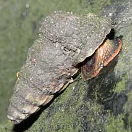

|
|
| shelled snails text index | photo index |
| Phylum Mollusca > Class Gastropoda |
| Horn
snails Family Potamididae updated Sep 2020
Where seen? Horn snails are common in our mangroves but often overlooked. Small ones creep on mangrove tree trunks and leaves, larger ones are found on mud. Features: Shell long and conical. Operculum is made of a horn-like material usually with a tight spiral pattern. Some have a third eye on their mantle margin, in addition to a pair of eyes on tentacles. Here's more on how to tell these snails apart. Sometimes confused with Creeper snails (Family Cerithiidae) which also have an operculum made of a horny material but with only a few whorls. Horn snails have siphonal canals that are less pronounced and they are generally larger than Creeper snails. More on how to tell these snails apart. |
 Rodong snails mating? Sungei Buloh Wetland Reserve, Mar 06 |
 The Red Chut-chut snail on a mangrove tree trunk.Kranji, Jan 11 |
 Shell structure East Coast Park, Feb 09 |
| What do they eat? Horn snails
graze on detritus and algae growing on the bottom or other surfaces
such as tree trunks. Many feed at low tide, some in very large groups. Horn snail babies: Members of this family have separate genders. The male transfers a sperm packet into the female. Eggs are laid in a gelatinuous mass on hard surfaces or the muddy bottom. Human uses: Many Horn snails are eaten by people. Rodong is said to be delicious when steamed and eaten with chilli. Chut-chut is boiled and eaten by biting off the tip and sucking out the animal. Even the small Belitong is also said to taste good. |
| Some Horn snails on Singapore shores |


| Familty
Potamididae recorded for Singapore from Tan Siong Kiat and Henrietta P. M. Woo, 2010 Preliminary Checklist of The Molluscs of Singapore.
|
Links
References
|